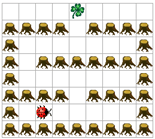

Führen Sie Kara durch das Labyrinth zum Kleeblatt. Jede horizontale Baumreihe, ausser der untersten, hat genau einen Ausgang, der in die nächst höhere Zeile führt. Diesen muss Kara jeweils finden. Hinter dem letzten Ausgang wartet das Kleeblatt auf ihn.
Programmieren Sie Kara so, dass er das Kleeblatt findet und aufnimmt. Dabei soll er nie an einem Ausgang vorbeilaufen, ohne ihn zu benutzen! Zu Beginn schaut Kara immer nach rechts.